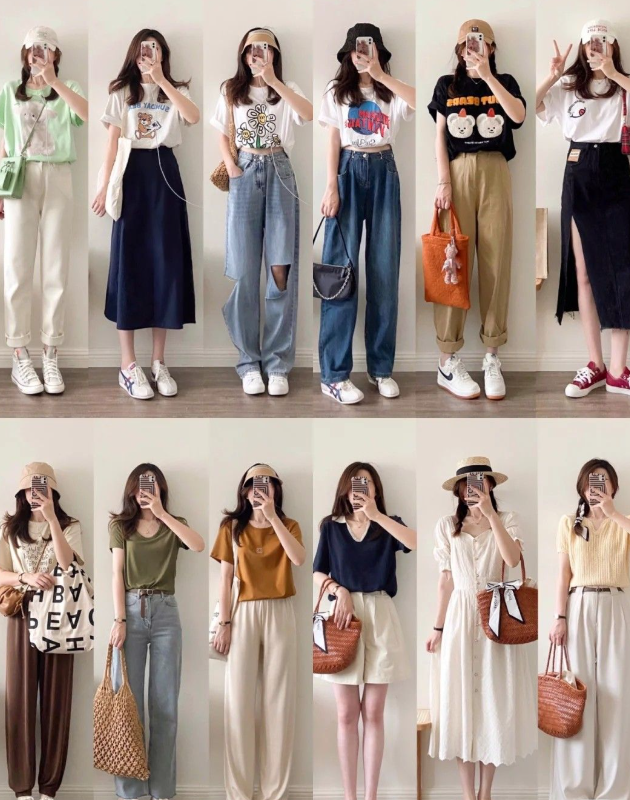

Summer is the perfect time to refresh your wardrobe and embrace breezy, stylish outfits. With longer days and warmer nights, it’s your chance to experiment with colors, patterns, and accessories that bring out your personality. Whether you’re heading to the beach, a summer festival, or a casual brunch, these styling ideas will help you stand out. Here are 50 exciting ways to style your summer wardrobe:
- 1. Go Monochromatic Stick to a single color scheme for a sleek, polished look. Monochromatic outfits are easy to put together and exude effortless style. Try pairing a white top with white shorts, or go bold with all-pink ensembles.
- 2. Flowy Maxi Dresses Perfect for a beach day or a casual outing, maxi dresses are a summer staple. Look for lightweight fabrics like cotton or chiffon in floral prints or pastel hues to keep cool and stylish.
- 3. Crop Tops & High-Waisted Shorts This classic summer duo is both comfortable and chic. Opt for a fitted crop top or a loose, knotted version paired with distressed denim shorts for a casual look. 
- 4. Oversized Sunglasses Add glamour to any outfit with oversized sunglasses. Choose frames that complement your face shape and go bold with tinted or gradient lenses for a statement look.
- 5. White Sneakers A pair of crisp white sneakers is a versatile addition to your wardrobe. They pair well with everything from dresses to jeans, providing a fresh and clean aesthetic.
- 6. Brightly Colored Accessories Transform a simple outfit by adding vibrant accessories. Think bold statement earrings, chunky necklaces, or brightly colored handbags.
- 7. Linen Everything Linen is lightweight, breathable, and perfect for hot summer days. From linen shirts to wide-leg pants, this fabric is a go-to for both casual and semi-formal occasions.
- 8. Layered Necklaces Elevate simple outfits with layered necklaces. Mix and match different lengths, metals, and pendant styles for a personalized touch.
- 9. Rompers & Jumpsuits These one-piece wonders are easy to style and incredibly comfortable. Choose playful prints or solid colors for a look that transitions from day to night seamlessly.
- 10. Wide-Brimmed Hats Stay cool and protect yourself from the sun with wide-brimmed hats. They add a touch of sophistication to your look, whether you’re wearing a sundress or swimwear.
- 11. Pastel Shades Incorporate soft colors like lavender, mint, and peach into your wardrobe. These hues are perfect for summer and pair beautifully with neutral tones.
- 12. Denim Jackets A lightweight denim jacket is ideal for cool summer evenings. Throw it over a dress or pair it with shorts for a casual yet polished outfit.
- 13. Espadrilles Espadrilles are the epitome of summer chic. Whether flat or with a wedge, these shoes add a touch of elegance to any outfit.
- 14. Bold Prints Make a statement with bold prints like tropical flowers, abstract patterns, or animal prints. Pair them with neutral pieces to keep the look balanced.
- 15. Sheer Fabrics Light and breezy, sheer fabrics are great for layering. Try a sheer kimono over a tank top or a lightweight blouse for a stylish and airy vibe.
- 16. Midi Skirts Flowy midi skirts are feminine and versatile. Pair them with a tucked-in tee or a crop top for a chic, comfortable look.
- 17. Statement Belts Define your waist and add an edge to your outfit with a bold belt. Choose one with an eye-catching buckle or unique details.
- 18. Tie-Dye Tees Bring retro vibes back with tie-dye t-shirts. Pair them with denim shorts or skirts for a relaxed summer aesthetic.
- 19. Palazzo Pants Wide-leg palazzo pants are elegant and breathable. Style them with fitted tops or tank tops for a balanced silhouette.
- 20. Minimalist Sandals Sleek, minimalist sandals are perfect for summer’s casual elegance. Look for strappy designs in neutral tones for maximum versatility.
- 21. Graphic Tees Show off your personality with graphic tees. Whether they feature quirky slogans, artistic designs, or your favorite band, they’re a fun addition to your summer wardrobe.
- 22. Off-the-Shoulder Tops Flirty and feminine, off-the-shoulder tops are ideal for sunny days. Pair them with jeans or skirts for a romantic vibe.
- 23. Basket Bags Basket bags are trendy and functional. These woven wonders add a rustic charm to your outfit and are great for carrying essentials.
- 24. Ruffled Details Ruffles add a playful and whimsical touch to any outfit. Look for dresses, tops, or skirts with ruffled hemlines or sleeves.
- 25. Denim Skirts A versatile staple for casual days, denim skirts pair well with almost any top. Opt for distressed or button-front styles for added flair.